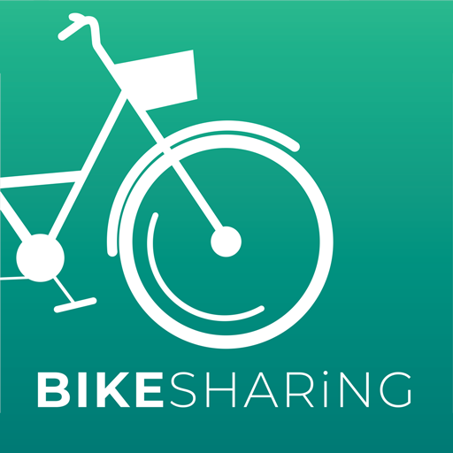

Client is a forefront player in the microchips and robotics industry and has an extensive
portfolio that caters to automotive, consumer electronics and industrial sector. I discovered through analysis and visualization, the company
had issues with demand unpredictability, inventory inefficiencies and identification of profitable market opportunities. The suggestions I gave have improved profit margin by 25%.
.
A leading shopping app, faced challenges in user retention, conversion rates, and
revenue growth due to high bounce rates, cart abandonment, and low average order values (AOV).
To strengthen its market position, the project focused on data-driven strategies to enhance
user experience, optimize checkout processes, and increase sales.
Household Income vs. Sales & Product Fit Analysis
In this project, I analyzed the relationship between household income, state-level sales, and product affordability using Power BI. The goal was to determine if higher-income states generate higher sales and to identify the best product fit for customers based on income brackets.
The analysis was visualized using scatter plots, histograms, tree maps, and donut charts, providing insights into consumer spending patterns, income distribution, and sales performance.
This project demonstrates data storytelling using Power BI to drive business insights and optimize pricing & marketing strategies.
📊 Tools Used: Power BI, DAX, Data Visualization, Correlation Analysis
In this project, I analyzed historical Olympic Games data to uncover insights about athlete performance, country participation, and medal
distributions. Using SQL, I explored key questions such as the most successful nations, top athletes, gender participation ratios, and trends in sports over time. The analysis also highlights India's achievements, including its most successful sport and medal records in hockey.
This project demonstrates my ability to work with large datasets, write complex SQL queries, and derive meaningful insights from structured data.

A python script for an interactive experience to explore data related to bike share systems for three major cities in the United States - Chicago, New York City, Washington

Understanding car pricing is crucial for both buyers and sellers. In this analysis, I explored how factors like brand, fuel type, transmission, and mileage influence car prices using an interactive Power BI dashboard.
📊 Tools & Techniques Used:
✅ Power BI, DAX, Data Visualization – Interactive dashboard design
This project provides valuable insights into market trends and pricing strategies for car buyers, sellers, and dealerships.
This project focuses on analyzing expenditure patterns across vendors, locations, and categories using Tableau.
The goal is to provide actionable insights that can drive cost efficiency, vendor optimization, and strategic budgeting decisions.
🚀 Tool & Technology Used:
- Tableau: Designed and developed interactive dashboards.
🌟 Why This Project Matters:
Data-driven decision-making is critical for businesses, and this dashboard showcases how visual analytics can uncover hidden trends and drive efficiency.

This end-to-end analytics project was designed to support inventory decision-making for an organization,
a leader in consumer electronics. I worked as a Data Analyst to uncover sales patterns, optimize inventory levels,
and provide actionable insights to the Supply Chain Management team.
🎯 Project Goals:
- Minimize overstock and stockouts.
Understand seasonal demand for each product category.
Improve product availability and customer satisfaction.
Enable data-driven planning

🔍 "How do we retain top talent, optimize compensation, and plan smarter?"
This interactive Tableau dashboard answers that.
📊 Key Highlights:
Centralized employee data across 10 years.
Visualized compensation by role, tenure, and cost of living.
Tracked hiring trends and workforce growth.
Delivered clear insights for strategic HR decisions.
💡 Built to support better talent management, smarter workforce planning, and data-backed decision-making.
🔍 Project Overview
This project evaluates the effectiveness of two webpage designs (Version A and Version B)
using A/B testing data collected over two weeks. The objective was to determine which version
better improves user engagement, conversion performance, and customer satisfaction.
🎯 Objectives
Compare user behavior across two webpage versions.
Analyze referral source performance.
Visualize the conversion funnel and drop-offs.
Benchmark performance against e-commerce standards.
Provide actionable recommendations for UX improvements.
Industry: Digital Marketing
Tools: Tableau Public, Excel